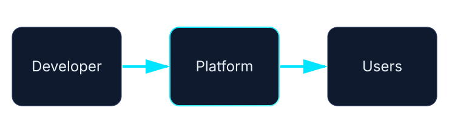
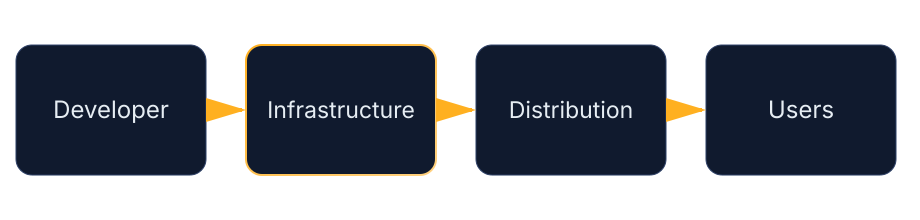

Introduction
I spent three hours recently explaining the idea of local-first to a founder building a startup.
They kept waiting for the moment when I would say it.
You know the line.
“And that’s why you should never use AWS.”
I never said that.
Because that’s not what local-first means.
Local-first isn’t a rebellion against cloud infrastructure. It isn’t a purity test for engineers. And it certainly isn’t a moral crusade against platforms.
Local-first is something much simpler — and much more uncomfortable.
It asks a question most builders avoid asking:
“Whose infrastructure are you handing your problem to?”
How Cloud Became the Default
Most software today is cloud-first by default.
Not because cloud infrastructure is always the best option.
But because someone solved distribution first.
Platforms like AWS, Heroku, Vercel, and Netlify removed a painful problem from the software equation: deployment. Instead of managing servers, provisioning hardware, configuring networking, and maintaining uptime, you could simply push code and get a URL.
That shift was transformative.
Developers no longer needed to think about infrastructure. Startups could move faster. Teams could scale without worrying about physical machines or system administration.
And because the convenience was real, the industry adopted it wholesale.
Over time, cloud-first stopped being a choice.
It became the default assumption.


The Question Nobody Asks
But something interesting happened in that transition.
When infrastructure became easy, developers stopped asking whether they actually needed it.
They stopped asking questions like:
Instead, the default mindset became:
“This problem belongs on someone else’s infrastructure.”
Most of the time, that’s perfectly reasonable.
But the assumption itself is rarely examined.
And that’s where local-first thinking starts.
Local-first doesn’t say don’t use platforms. It simply asks you to understand the leverage you're giving away before you give it away.
A Small Experiment in Distribution
I started thinking about this question while working on something completely unrelated to software infrastructure.
Publishing.
Traditional publishing operates exactly like cloud infrastructure. Authors hand their work to a distribution system — a publisher, a journal, a platform — and the publisher handles everything else.
Editing.
Printing.
Distribution.
Marketing.
Access.
The author focuses on writing. The infrastructure belongs to someone else.
There’s nothing wrong with this model. It has produced extraordinary books for centuries.
But I got curious about something.
What happens if you solve distribution yourself?
So I ran a small experiment.
Instead of submitting manuscripts to publishers, I published books directly.
Publishing Without Gatekeepers
Over the past year I released several books directly through Kindle Direct Publishing (KDP):
- Analytical Chemistry: Errors, Statistics & Data Analysis (2026)
- Internet of Things: A Complete NPTEL Course Compilation
- The Daxini Stack: Sovereign Digital Infrastructure
- Additional works on systems thinking, engineering, and data analysis
These weren’t vanity projects.
They were experiments in distribution.
I wanted to see what publishing looked like when the author controlled the entire pipeline — writing, formatting, distribution, pricing, and updates.
Not because traditional publishing is broken.
But because I wanted to understand something deeper:
“What changes when you own the infrastructure?”
Traditional
Author → Publisher → Distribution → Reader
Local-first
Author → Direct Platform → Reader
When You Own Distribution, Everything Changes
Something interesting happens when you control the pipeline.
Your design decisions shift.
They shift in subtle ways at first, and then dramatically.
1. You Compress Better
Traditional publishing has structural padding built into it.
Chapters stretch longer than necessary. Pages exist partly because a physical book has a certain shape. Academic texts often contain redundancy designed for classroom pacing rather than conceptual clarity.
When you publish directly, those constraints disappear.
You start asking:
Does this section actually need to exist?
Is this explanation precise enough?
Can this concept be expressed in fewer words?
Compression becomes natural.
Not because brevity is fashionable, but because unnecessary complexity becomes visible when you’re responsible for the entire structure.
2. You Become Ruthless About Necessity
When distribution is external, there’s often an invisible safety net.
If a book isn’t perfect, editors can help.
If something breaks, the publisher manages the fix.
If the market response is weak, marketing teams intervene.
When you control the entire pipeline, that safety net disappears.
You become responsible for everything.
The result is a kind of ruthless clarity.
Every diagram must justify its presence.
Every chapter must carry weight.
Every example must earn its place.
There’s no filler because filler becomes painfully obvious when the system belongs to you.
3. You Design for Resilience
Platforms change.
Publishing models change.
Algorithms change.
When you rely entirely on someone else’s distribution system, those changes can break your entire pipeline.
But when you design systems yourself, you start thinking differently.
You ask:
Can this content exist in multiple formats?
Can it survive platform changes?
Can it move easily between systems?
Local-first thinking naturally pushes you toward resilient design.
Instead of optimizing for one distribution channel, you optimize for portability.
4. You Audit Quality Ruthlessly
Ownership changes incentives.
When a publisher owns distribution, quality control happens upstream. Editors, reviewers, and production teams enforce standards.
When you own the pipeline, the responsibility moves downstream — onto you.
You become the final reviewer.
The final editor.
The final quality control system.
That pressure forces a kind of discipline that’s hard to replicate in distributed workflows.
You start asking harder questions about your own work.
The Unexpected Irony
Here’s the part I didn’t expect.
Books built using this local-first approach are often easier to pitch to traditional channels later.
That sounds backwards.
But it makes sense once you think about it.
A book built entirely inside traditional publishing assumptions is tightly coupled to that ecosystem. Its structure, formatting, and production pipeline all assume the presence of a publisher.
A local-first book doesn’t assume any of that.
It’s already portable.
It already exists independently.
It can move between systems without breaking.
Which means traditional publishers can adopt it without rewriting the entire infrastructure around it.
Local-first design doesn’t reject traditional systems.
It simply refuses to depend on them.
The Real Meaning of Sovereignty
The word sovereignty gets thrown around a lot in technical conversations.
People often interpret it as isolation.
“No cloud.”
“No platforms.”
“No external systems.”
But sovereignty isn’t isolation.
Sovereignty is understanding the levers of your system.
It means knowing:
- where your dependencies live
- who controls them
- what happens when they change
And most importantly:
whether your system can survive without them.
That understanding doesn’t prevent you from using platforms.
It simply prevents you from being surprised by them.
The Local-First Mindset
Local-first is not a technical architecture.
It’s a design mindset.
It starts with a simple question:
“What would this system look like if it had to work on my own infrastructure first?”
Sometimes the answer is:
“Exactly the same.”
Sometimes the answer is:
“Very different.”
But the act of asking the question changes how you build.
It reveals assumptions you didn’t realize you were making.
Distribution Is Power
The founder I spoke with eventually understood the point.
Local-first wasn’t about rejecting AWS.
It wasn’t about building everything yourself.
It was about understanding distribution as leverage.
Infrastructure determines who controls the system.
If you control distribution, you control:
- access
- updates
- pricing
- relationships with users
When you hand that control to someone else, you gain convenience.
But you lose leverage.
That trade-off can be worth it.
It often is.
But it’s better to make that trade consciously.
The Permission You Already Have
Most builders assume they must start inside someone else’s infrastructure.
Cloud platforms.
Publishing systems.
Distribution networks.
But increasingly, the tools exist to solve distribution yourself — at least initially.
Local compute.
Self-hosting.
Direct publishing.
Independent distribution channels.
These options don’t replace platforms.
They simply give you a choice.
The Question That Changes Everything
Local-first thinking begins with a simple exercise.
Before handing a problem to someone else’s infrastructure, ask:
“What would it look like if I solved distribution myself?”
You might still choose the platform.
You might still choose the cloud.
But the decision will be different.
Because now you understand the levers.
And sovereignty isn’t about rejecting systems.
It’s about knowing where those levers are before you hand them away.